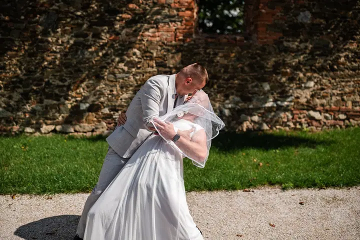
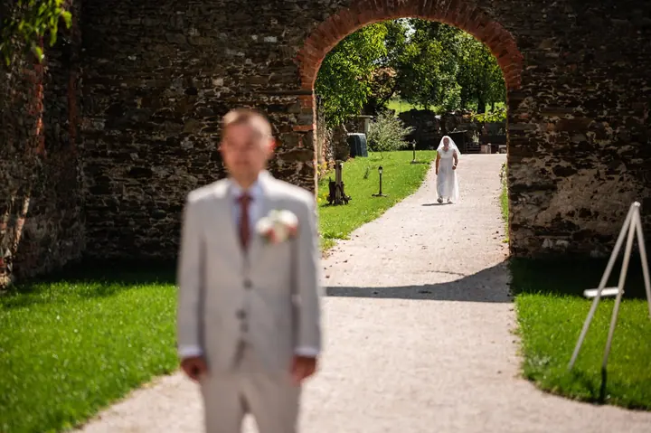
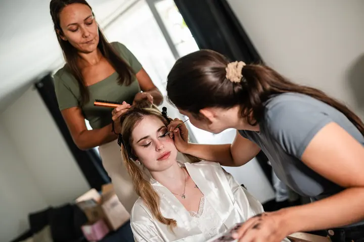
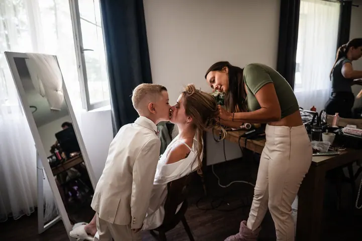

jedna
Svatební fotografie
Fotím svatby od příprav přes obřad, skupinové fotky a portréty novomanželů až po prskavky a večerní zábavu. Vybrat si můžete bronzový, stříbrný nebo zlatý balíček. Větší svatby a svatby v cizině naceňuji individuálně.

Svatební a portrétní fotograf · Chomutov, Podkrušnohoří

Jmenuji se Pavel Kinšt a jsem fotograf ze severu, z Podkrušnohoří. Nejraději fotím svatby, od prvních příprav až po večerní prskavky. Svou tvorbu bych popsal slovem autentická, protože mi jde hlavně o opravdovost.
Více o mně
Co fotím
jedna
Fotím svatby od příprav přes obřad, skupinové fotky a portréty novomanželů až po prskavky a večerní zábavu. Vybrat si můžete bronzový, stříbrný nebo zlatý balíček. Větší svatby a svatby v cizině naceňuji individuálně.
dvě
Komerční i nekomerční portréty jednotlivců a skupin. Na přání připravím focení ušité na míru, které ukáže vaše zájmy, práci nebo osobnost.
Párové a zásnubní focení venku. V ceně je 10 upravených fotografií, které si sami vyberete.
Focení rodin s dětmi v exteriéru. Dostanete 10 upravených fotografií podle vlastního výběru a každou další můžete doobjednat.
Svatební den plný opravdových emocí

Za objektivem
Narodil jsem se v osmdesátých letech v Podkrušnohoří a žiji tu dodnes. Fotím od dětství, první fotoaparát jsem dostal v osmi letech. Byl to automatický kinofilmový kompakt a s ním jsem fotil hlavně na výletech a dovolených s rodiči.
Pořádně jsem se do focení pustil kolem roku 2010, když jsem si koupil první zrcadlovku Nikon D90. Nikonu jsem věrný dodnes. Začínal jsem krajinou, pak přibyly portréty a svatby. Svatební fotografie patří k mým nejoblíbenějším disciplínám. Rád zachycuji radost, kterou svatební den provází, a když pak novomanželům předám fotky a vidím jejich nadšení, je to pro mě to nejlepší.
Krajině jsem ale zůstal věrný. Miluji pohyb venku, cestování, spaní pod širákem a chození po horách. Kvůli východu slunce rád vstanu ve čtyři ráno a vynesu do kopce dvacetikilový batoh. Sídlím v Chomutově, ale přijedu za vámi kamkoliv.
Pavel
Napíšete mi nebo zavoláte a domluvíme se na termínu a balíčku. Termín závazně rezervuji po zaplacení zálohy ve výši 30 % z ceny.
Zhruba měsíc až dva před obřadem si spolu projdeme plán dne. U bronzového balíčku přes videohovor, u stříbrného a zlatého osobně.
Fotím podle zvoleného balíčku, od příprav přes obřad a skupinky po portréty a večerní zábavu. Na místě se dá balíček rozšířit.
Dostanete pečlivě upravené fotografie v elektronické podobě. U zlatého balíčku k nim přidám i slideshow na vaši oblíbenou písničku.
Portfolio
Otázky
Pro sezónu 2026 nabízím bronzový balíček za 10 000 Kč (2 hodiny), stříbrný za 16 000 Kč (6 hodin) a zlatý za 20 000 Kč na celý den. Větší svatby a svatby v cizině naceňuji individuálně.
U zlatého balíčku je doprava po celé ČR zdarma. U ostatních balíčků je zdarma do 70 km, za každý další kilometr účtuji 10 Kč. Dopravu do zahraničí domluvíme individuálně.
Ne, neupravené fotografie ani soubory ve formátu RAW neposkytuji. Dostanete jen fotky, které jsem pečlivě vybral a upravil.
Běžné focení v exteriéru pro jednotlivce, páry i rodiny s dětmi stojí 2000 Kč a obsahuje 10 upravených fotografií podle vašeho výběru. Každá další fotka stojí 150 Kč.
Napište pár vět o tom, co si představujete. · +420 725 033 116